library(tidyverse)
library(ggplot2)
library(lubridate)
library(grid)
library(ggnewscale)
library(ggtext)
library(shadowtext)
library(patchwork)
library(gganimate)
library(hrbrthemes)
library(kableExtra)
library(maps)
library(usmap)
knitr::opts_chunk$set(echo = TRUE, warning=FALSE, message=FALSE)Final Project Assignment: Kekai Liu
final_Project_assignment
final_Project_mortgage
Race and Mortgage Lending in New York State
Introduction
Does race influence approvals of mortgage loan applications? This report analyzes individual mortgage loan applications submitted in New York State from 2008 to 2017, using publicly available data provided by the Consumer Financial Protection Bureau under the Home Mortgage Disclosure Act. This report finds that approval rates of mortgage loan applications in New York State vary by a fair margin based on the race of applicants. In New York State, non-Hispanic White and Asian applicants receive mortgage loan approvals at higher rates than Hispanics, Black, Pacific Islander, and Native American/Alaska Native applicants. Black and Native American/Alaska Native applicants have the lowest rates of mortgage loan approvals in New York State.
Literature Review
There are several studies on the relationship between race and mortgage lending. Munnell et al. (1996) analyzed lending data provided by Boston-area banks and a random sample of white mortgage applicants and found that Black and Hispanic mortgage applicants were less likely to be approved than White applicants in Boston. Cherian (2014) studied race and mortgage lending in Indianapolis from 1992 to 2013 and concluded that Black and Hispanic applicants were less likely to obtain a loan than White applicants, all else equal.
The existing literature implies that people of color are at a disadvantage when it comes to obtaining a mortgage. This implication is concerning because the usage of race in determining the outcome of a mortgage application is discriminatory. If minority applicants are less likely to be approved due to race as the existing literature suggests, then there are structural barriers preventing minorities from attaining homeownership. This report renews the discussion on race and mortgage lending by using more recent data and providing a case study of mortgage lending in New York State.
Dataset Introduction
The Home Mortgage Disclosure Act (1973) is a Congressional act which mandates financial entities and lenders to keep and report data on mortgage loans (Consumer Financial Protection Bureau 2023). This reported data under the Home Mortgage Disclosure Act (hereinafter referred to as HMDA) is maintained under the auspices of the Consumer Financial Protection Bureau, which publicly publishes the annual data on its website (Consumer Financial Protection Bureau 2017). The HMDA data contains all U.S. mortgage applications submitted by individuals to HMDA-reporting financial institutions. The HMDA data provides extensive detail on each mortgage application, such as the race, ethnicity, income of the applicant and co-applicants (if any) as well as the county of the property and size of loan requested. The HMDA data also reports on the outcome of the application, whether it was approved, denied, withdrawn, etc.
Dataset Description
The HMDA data includes information on the race (American Indian or Alaska Native, Asian, Black, Pacific Islander, White) and ethnicity (Hispanic or non-Hispanic) of applicants and co-applicants. This information was aggregated into a single race, known as hh_race (short for household race), per mortgage application for ease of analysis. If an applicant is White and Hispanic, then the applicant’s race is coded as “Hispanic.” If both the applicant and co-applicant are people of color but different races, then the race is coded as the same as the race of the main applicant. If only one out of the applicant and co-applicant are white, then the race is coded as the same as the race of the person of color. If applicants of color are at a disadvantage, as existing literature suggests, then applications filed jointly by White and non-White applicants are likely to be treated differently than applications by White applicants.
The HMDA data comes with a dictionary which provides descriptions of variables and numeric codes. This dictionary was used to extract relevant variables from the data for this report. In addition to the aforementioned race and ethnicity variables, the year of submission, the loan amount requested, the outcome of application, and county of the property for each application in New York State were retrieved and redefined to construct a dataset of analysis which contains the following columns: - year: year of application submission - hh_race: aggregated race of applicant and co-applicant - income: gross annual income of applicant in U.S. dollars - county: county of property on application - loan_amount: loan requested in U.S. dollars - action: outcome of the application
setwd("C:/Users/16192/Documents/DACSS601/601_Spring_2023/posts/")
# Retrieve all dataset names in folder
filenames <- list.files("KekaiLiu_FinalProjectData")
# Read in each dataset and assign it to a dataframe
for(i in 1:length(filenames)) {
assign(paste0("df_", i), read_csv(paste0(getwd(), "/KekaiLiu_FinalProjectData/", filenames[i])))
}
# Combine dataframes into a single dataframe and recode variables to standardized values
loans <- bind_rows(df_1, df_2, df_3, df_4, df_5, df_6, df_7, df_8, df_9, df_10) %>%
mutate(year = as_of_year,
loan_amount = loan_amount_000s * 1000,
action = case_when(action_taken == 1 ~ "loan originated",
action_taken == 2 ~ "application approved but not accepted",
action_taken == 3 ~ "application denied by financial institution",
action_taken == 4 ~ "application withdrawn by applicant",
action_taken == 5 ~ "file closed for incompleteness",
action_taken == 6 ~ "loan purchased by the institution",
action_taken == 7 ~ "preapproval request denied by financial institution",
action_taken == 8 ~ "preapproval request approved but not accepted"),
ethnicity = case_when(applicant_ethnicity == 1 ~ "hispanic or latino",
applicant_ethnicity == 2 ~ "not hispanic or latino",
applicant_ethnicity == 3 ~ "information not provided",
applicant_ethnicity == 4 ~ "not applicable"),
co_ethnicity = case_when(co_applicant_ethnicity == 1 ~ "hispanic or latino",
co_applicant_ethnicity == 2 ~ "not hispanic or latino",
co_applicant_ethnicity == 3 ~ "information not provided",
co_applicant_ethnicity == 4 ~ "not applicable",
co_applicant_ethnicity == 5 ~ "no coapplicant"),
race = case_when(applicant_race_1 == 1 ~ "american indian or alaska native",
applicant_race_1 == 2 ~ "asian",
applicant_race_1 == 3 ~ "black",
applicant_race_1 == 4 ~ "pacific islander",
applicant_race_1 == 5 ~ "white",
applicant_race_1 == 6 ~ "information not provided",
applicant_race_1 == 7 ~ "not applicable"),
co_race = case_when(co_applicant_race_1 == 1 ~ "american indian or alaska native",
co_applicant_race_1 == 2 ~ "asian",
co_applicant_race_1 == 3 ~ "black",
co_applicant_race_1 == 4 ~ "pacific islander",
co_applicant_race_1 == 5 ~ "white",
co_applicant_race_1 == 6 ~ "information not provided",
co_applicant_race_1 == 7 ~ "not applicable",
co_applicant_race_1 == 8 ~ "no coapplicant"),
income = applicant_income_000s * 1000,
county = county_code + 36000) %>%
select(year, loan_amount, action, ethnicity, co_ethnicity, race, co_race, income, county)
# Aggregate applicant and co-applicant race into a single race variable: hh_race
# Define race of household: if coapplicant is nonwhite, define that as race as household, if applicant and coapplicant are both white, but ethnicity is hispanic, define as hispanic
loans2 <- loans %>%
mutate(hh_race = case_when(
co_race != "white" & co_race != "no coapplicant" ~ co_race,
race == "white" & co_race == "no coapplicant" & ethnicity == "hispanic or latino" ~ "hispanic",
race == "white" & co_race == "white" & (ethnicity == "hispanic or latino" | co_ethnicity == "hispanic or latino") ~ "hispanic",
TRUE ~ race)) %>%
select(year, loan_amount, action, hh_race, income, county)Descriptive Statistics
The constructed dataset has 5,183,081 rows corresponding to 5,183,081 mortgage application submitted in New York State from 2007-2018, and six columns corresponding to the six relevant variables for analysis.
# Dimensions of data
dim(loans2)[1] 5183081 6Table 1 displays the total number of mortgage applications submitted in New York State per year. Table 1A displays the the counts of each variable. If there is no missing data, then the count should equal 5,183,081 - the number of rows; income has 544,858 missing values and county has 11,910 missing values. These missing values do not affect analysis at the statewide level, as the two primary variables of interest are hh_race (representing the construct of race) and action (representing the construct of mortgage lending). So, rows with missing values for income and county do not need to be removed for state-level analysis.
# Table of counts, by year
loans2 %>%
group_by(year) %>%
mutate(count = n()) %>%
distinct(year, count) %>%
pivot_wider(names_from = year, values_from = count) %>%
kbl(caption = "Table 1. New York State Number of Mortgage Applications") %>%
kable_classic(html_font = "Times New Roman", font_size=16)| 2008 | 2009 | 2010 | 2011 | 2012 | 2013 | 2014 | 2015 | 2016 | 2017 |
|---|---|---|---|---|---|---|---|---|---|
| 644647 | 645487 | 529869 | 503733 | 566980 | 539217 | 389279 | 439654 | 477313 | 446902 |
# Table of non-missing vs. missing values for relevant variables
loans2 %>%
mutate(
hhrace_non = sum(!is.na(hh_race)),
hhrace_missing = sum(is.na(hh_race)),
year_non = sum(!is.na(year)),
year_missing = sum(is.na(year)),
action_non = sum(!is.na(action)),
action_missing = sum(is.na(action)),
income_non = sum(!is.na(income)),
income_missing = sum(is.na(income)),
amount_non = sum(!is.na(loan_amount)),
amount_missing = sum(is.na(loan_amount)),
county_non = sum(!is.na(county)),
county_missing = sum(is.na(county))
) %>%
distinct(hhrace_non, hhrace_missing, year_non, year_missing, action_non, action_missing, income_non, income_missing, amount_non, amount_missing, county_non, county_missing) %>%
pivot_longer(cols = everything(), names_to = c("variable", "missing"), names_sep = "_", values_to = "count") %>%
mutate(variable = case_when(variable == "hhrace" ~ "hh_race", variable == "amount" ~ "loan_amount", TRUE ~ variable), missing = case_when(missing == "non" ~ "no", missing == "missing" ~ "yes")) %>%
kbl(caption = "Table 1A. New York State Mortgage Applications, Variable Counts 2008-2017") %>%
kable_classic(html_font = "Times New Roman", font_size=16) %>%
row_spec(seq(2, 12, 2), extra_css = "border-bottom: 0.5px dashed;")| variable | missing | count |
|---|---|---|
| hh_race | no | 5183081 |
| hh_race | yes | 0 |
| year | no | 5183081 |
| year | yes | 0 |
| action | no | 5183081 |
| action | yes | 0 |
| income | no | 4638223 |
| income | yes | 544858 |
| loan_amount | no | 5183081 |
| loan_amount | yes | 0 |
| county | no | 5171171 |
| county | yes | 11910 |
Table 1B and Table 1C breakdown mortgage applications in New York State by the race of applicant. Irrespective of the year, White applicants outnumber applicants of other races by far; White applicants make up around 60% of all applicants. Native Americans and Pacific Islander applicants are the fewest in number, representing less than one percent of all applicants. Some mortgage applications do not report race, or the applicants fail to self-report. These applications do not need to be redefined or removed, because they do not affect the comparisons between different applicants by race.
# Summary Statistics of Relevant Categorical Variables (count for unique values)
loans2 %>%
select(hh_race, year) %>%
mutate(hh_race = factor(hh_race)) %>%
table() %>%
kbl(caption = "Table 1B. New York State Mortgage Loan Applicants, by Race") %>%
kable_classic(html_font = "Times New Roman", font_size=16) %>%
row_spec(1:8, extra_css = "border-bottom: 0.5px dashed;")| 2008 | 2009 | 2010 | 2011 | 2012 | 2013 | 2014 | 2015 | 2016 | 2017 | |
|---|---|---|---|---|---|---|---|---|---|---|
| american indian or alaska native | 3519 | 2503 | 1851 | 1738 | 2020 | 2017 | 1701 | 1911 | 2175 | 2231 |
| asian | 35297 | 33659 | 31457 | 29484 | 33437 | 34205 | 25716 | 29323 | 33919 | 34725 |
| black | 55577 | 39025 | 31964 | 29268 | 31296 | 32694 | 25417 | 29200 | 33083 | 30699 |
| hispanic | 34841 | 26910 | 23329 | 22050 | 24680 | 25037 | 19003 | 22419 | 25946 | 24445 |
| information not provided | 94762 | 87390 | 71487 | 63976 | 65068 | 59260 | 39885 | 48473 | 57349 | 58768 |
| not applicable | 43280 | 64668 | 27039 | 38279 | 42829 | 52349 | 43373 | 50625 | 49800 | 48822 |
| pacific islander | 3073 | 2174 | 1714 | 1648 | 1789 | 1724 | 1237 | 1427 | 1611 | 1461 |
| white | 374298 | 389158 | 341028 | 317290 | 365861 | 331931 | 232947 | 256276 | 273430 | 245751 |
loans2 %>%
select(hh_race, year) %>%
mutate(hh_race = factor(hh_race)) %>%
table() %>%
prop.table(margin = 2) %>%
round(2) %>%
kbl(caption = "Table 1C. New York State Mortgage Loan Applicants, by Race (Proportion)") %>%
kable_classic(html_font = "Times New Roman", font_size=16) %>%
row_spec(1:8, extra_css = "border-bottom: 0.5px dashed;")| 2008 | 2009 | 2010 | 2011 | 2012 | 2013 | 2014 | 2015 | 2016 | 2017 | |
|---|---|---|---|---|---|---|---|---|---|---|
| american indian or alaska native | 0.01 | 0.00 | 0.00 | 0.00 | 0.00 | 0.00 | 0.00 | 0.00 | 0.00 | 0.00 |
| asian | 0.05 | 0.05 | 0.06 | 0.06 | 0.06 | 0.06 | 0.07 | 0.07 | 0.07 | 0.08 |
| black | 0.09 | 0.06 | 0.06 | 0.06 | 0.06 | 0.06 | 0.07 | 0.07 | 0.07 | 0.07 |
| hispanic | 0.05 | 0.04 | 0.04 | 0.04 | 0.04 | 0.05 | 0.05 | 0.05 | 0.05 | 0.05 |
| information not provided | 0.15 | 0.14 | 0.13 | 0.13 | 0.11 | 0.11 | 0.10 | 0.11 | 0.12 | 0.13 |
| not applicable | 0.07 | 0.10 | 0.05 | 0.08 | 0.08 | 0.10 | 0.11 | 0.12 | 0.10 | 0.11 |
| pacific islander | 0.00 | 0.00 | 0.00 | 0.00 | 0.00 | 0.00 | 0.00 | 0.00 | 0.00 | 0.00 |
| white | 0.58 | 0.60 | 0.64 | 0.63 | 0.65 | 0.62 | 0.60 | 0.58 | 0.57 | 0.55 |
Table 2A lists the counts of the different possible outcomes of a mortgage application. The most common outcomes are “loan originated” which means the loan was approved by the mortgage lender and accepted by the applicant and “application denied by financial institution” which means that the application was rejected. It is important to note “application approved but not accepted” which indicates that the lender granted the mortgage but the applicant did not accept the loan. The outcomes “loan originated” and “application approved but not accepted” constitute cases where mortgage applications were approved, while the outcome “application denied by financial institution” represent cases where mortgage applications were rejected; and so, analysis will focus on cases with these outcomes.
loans2 %>%
mutate(action = factor(action)) %>%
select(action, year) %>%
table() %>%
kbl(caption = "Table 2A. New York State Mortgage Loan Applications, by Result") %>%
kable_classic(html_font = "Times New Roman", font_size=16) %>%
row_spec(1:8, extra_css = "border-bottom: 0.5px dashed;")| 2008 | 2009 | 2010 | 2011 | 2012 | 2013 | 2014 | 2015 | 2016 | 2017 | |
|---|---|---|---|---|---|---|---|---|---|---|
| application approved but not accepted | 50730 | 34360 | 24995 | 24274 | 25632 | 26353 | 14760 | 14180 | 14453 | 15647 |
| application denied by financial institution | 169452 | 128255 | 107592 | 102704 | 109423 | 99619 | 75427 | 79697 | 85288 | 68255 |
| application withdrawn by applicant | 62495 | 65484 | 52895 | 45295 | 50563 | 40054 | 31162 | 39496 | 45397 | 47506 |
| file closed for incompleteness | 21322 | 20613 | 20444 | 20591 | 20585 | 20765 | 14840 | 16733 | 21297 | 19397 |
| loan originated | 252826 | 281652 | 252729 | 238554 | 285106 | 271829 | 198817 | 228054 | 246292 | 236499 |
| loan purchased by the institution | 87785 | 114896 | 71212 | 72247 | 75241 | 79878 | 54257 | 61490 | 64582 | 59584 |
| preapproval request approved but not accepted | 22 | 3 | 2 | 3 | 259 | 528 | 16 | 0 | 1 | 3 |
| preapproval request denied by financial institution | 15 | 224 | 0 | 65 | 171 | 191 | 0 | 4 | 3 | 11 |
loans2 %>%
mutate(action = factor(action)) %>%
select(action, year) %>%
table() %>%
prop.table(margin = 2) %>%
round(2) %>%
kbl(caption = "Table 2B. New York State Mortgage Loan Applications, by Result (Proportion)") %>%
kable_classic(html_font = "Times New Roman", font_size=16) %>%
row_spec(1:8, extra_css = "border-bottom: 0.5px dashed;")| 2008 | 2009 | 2010 | 2011 | 2012 | 2013 | 2014 | 2015 | 2016 | 2017 | |
|---|---|---|---|---|---|---|---|---|---|---|
| application approved but not accepted | 0.08 | 0.05 | 0.05 | 0.05 | 0.05 | 0.05 | 0.04 | 0.03 | 0.03 | 0.04 |
| application denied by financial institution | 0.26 | 0.20 | 0.20 | 0.20 | 0.19 | 0.18 | 0.19 | 0.18 | 0.18 | 0.15 |
| application withdrawn by applicant | 0.10 | 0.10 | 0.10 | 0.09 | 0.09 | 0.07 | 0.08 | 0.09 | 0.10 | 0.11 |
| file closed for incompleteness | 0.03 | 0.03 | 0.04 | 0.04 | 0.04 | 0.04 | 0.04 | 0.04 | 0.04 | 0.04 |
| loan originated | 0.39 | 0.44 | 0.48 | 0.47 | 0.50 | 0.50 | 0.51 | 0.52 | 0.52 | 0.53 |
| loan purchased by the institution | 0.14 | 0.18 | 0.13 | 0.14 | 0.13 | 0.15 | 0.14 | 0.14 | 0.14 | 0.13 |
| preapproval request approved but not accepted | 0.00 | 0.00 | 0.00 | 0.00 | 0.00 | 0.00 | 0.00 | 0.00 | 0.00 | 0.00 |
| preapproval request denied by financial institution | 0.00 | 0.00 | 0.00 | 0.00 | 0.00 | 0.00 | 0.00 | 0.00 | 0.00 | 0.00 |
Table 3A and Table 3B provide summaries of the loan amount requested and income of New York State mortgage applicants. The median loan amount is fairly stable over time, hovering around 200,000. The mean loan amount jumps to over 300,000 in 2013 and forward, implying that the presence of extremely high loans requested during these years; this is corroborated by the sd or standard deviation, which represents the variation in loan amount, going up dramatically since 2013.
On the other hand, median and mean income are fairly stable. Mean and median income do experience minor growth since 2008, likely due to the economic recovery after the 2008-09 financial crisis.
# Summary Statistics of Relevant Numeric Variables (min, max, mean, standard deviation, median)
# Loan Amount (Min, Max, Mean, Standard Deviation, Median)
loans2 %>%
group_by(year) %>%
summarise(
min = min(loan_amount, na.rm = TRUE),
mean = mean(loan_amount, na.rm = TRUE),
median = median(loan_amount, na.rm = TRUE),
max = max(loan_amount, na.rm = TRUE),
sd = sd(loan_amount, na.rm = TRUE)) %>%
pivot_wider(names_from = year, values_from = c(min, mean, median, max, sd)) %>%
pivot_longer(cols = everything(),
names_to = c(" ", "year"),
names_sep = "_",
values_to = "value") %>%
pivot_wider(names_from = year, values_from = value) %>%
kbl(caption = "Table 3A. New York State Mortgage Applicants, Loan Amount") %>%
kable_classic(html_font = "Times New Roman", font_size=16) %>%
row_spec(1:5, extra_css = "border-bottom: 0.5px dashed;")| 2008 | 2009 | 2010 | 2011 | 2012 | 2013 | 2014 | 2015 | 2016 | 2017 | |
|---|---|---|---|---|---|---|---|---|---|---|
| min | 1000.0 | 1000.0 | 1000.0 | 1000.0 | 1000.0 | 1000.0 | 1000.0 | 1000.0 | 1000 | 1000.0 |
| mean | 271268.9 | 253113.8 | 271049.1 | 276343.8 | 280326.0 | 313985.8 | 311726.5 | 333324.3 | 338045 | 350746.5 |
| median | 186000.0 | 198000.0 | 200000.0 | 195000.0 | 197000.0 | 198000.0 | 188000.0 | 208000.0 | 219000 | 214000.0 |
| max | 99999000.0 | 99999000.0 | 99999000.0 | 99999000.0 | 99999000.0 | 99999000.0 | 99999000.0 | 99999000.0 | 99999000 | 3400000000.0 |
| sd | 607425.3 | 413036.0 | 644513.3 | 734245.3 | 777233.5 | 1294076.1 | 1245574.9 | 1173204.2 | 1229039 | 5364808.5 |
# Applicant Income (Min, Max, Mean, Standard Deviation, Median)
loans2 %>%
group_by(year) %>%
summarise(
min = min(income, na.rm = TRUE),
mean = mean(income, na.rm = TRUE),
median = median(income, na.rm = TRUE),
max = max(income, na.rm = TRUE),
sd = sd(income, na.rm = TRUE)) %>%
pivot_wider(names_from = year, values_from = c(min, mean, median, max, sd)) %>%
pivot_longer(cols = everything(),
names_to = c(" ", "year"),
names_sep = "_",
values_to = "value") %>%
pivot_wider(names_from = year, values_from = value) %>%
kbl(caption = "Table 3B. New York State Mortgage Applicants, Income") %>%
kable_classic(html_font = "Times New Roman", font_size=16) %>%
row_spec(1:5, extra_css = "border-bottom: 0.5px dashed;")| 2008 | 2009 | 2010 | 2011 | 2012 | 2013 | 2014 | 2015 | 2016 | 2017 | |
|---|---|---|---|---|---|---|---|---|---|---|
| min | 1000.0 | 1000.0 | 1000.0 | 1000.0 | 1000.0 | 1000.0 | 1000.0 | 1000.0 | 1000.0 | 1000.0 |
| mean | 123649.9 | 124135.7 | 133566.1 | 137607.2 | 137878.5 | 138394.0 | 133923.2 | 140145.8 | 142128.6 | 142305.1 |
| median | 82000.0 | 85000.0 | 88000.0 | 88000.0 | 90000.0 | 89000.0 | 86000.0 | 90000.0 | 92000.0 | 93000.0 |
| max | 9999000.0 | 9999000.0 | 9999000.0 | 9999000.0 | 9999000.0 | 9999000.0 | 9999000.0 | 9999000.0 | 9999000.0 | 133549000.0 |
| sd | 245251.4 | 235859.2 | 251541.3 | 269473.1 | 254423.4 | 261226.4 | 262183.5 | 268471.3 | 280818.4 | 388612.9 |
Chart 1 plots the average loan requested by New York State mortgage applicants by race. Asian applicants consistently request the largest loans, while Native American/Alaskan Native applicants consistently request the smallest loans.
Chart 2 plots the average income of New York State mortgage applicants by race. Asian and non-Hispanic White applicants generally have the highest incomes, while Native American/Alaskan Native applicants generally have the lowest incomes.
The two charts indicate that the rankings of average loan requested and average income by applicant race are not necessarily matching. For example, non-Hispanic White applicants have the second highest average income, but they do not request the second highest average loans. This goes against the general reasoning that higher income individuals qualify for higher loans and so request larger mortgages. Also, Black applicants have the lowest average income, but they do not typically request the lowest average loan amount.
# Define colors to use in the ensuing plots
PURPLE <- "#800080"
GREEN <- "#2FC1D3"
BLUE <- "#076FA1"
GREY <- "#C7C9CB"
DARK_GREY <- "#5C5B5D"
RED <- "#E3120B"
# **Chart 1.** New York State Mortgage Applicants, Average Loan
# Plot labels and label positions for Chart 1
line_labels<- data.frame(
labels = c("Native", "Asian", "Black", "Hispanic", "Pacific Islander", "White"),
x = c(ymd(20160101), ymd(20160101), ymd(20140101), ymd(20090101), ymd(20150101), ymd(20100101)),
y = c(222000, 410000, 229000, 288000, 243000, 225000),
color = c(BLUE, DARK_GREY, RED, PURPLE, GREY, GREEN))
loans2 %>%
group_by(hh_race, year) %>%
filter(!is.na(loan_amount), hh_race %in% c("white", "black", "hispanic", "asian", "pacific islander", "american indian or alaska native")) %>%
summarise(mean_loan = mean(loan_amount)) %>%
mutate(date = ymd(paste0(year, "0101"))) %>%
ggplot(aes(date, mean_loan)) +
geom_line(aes(color = hh_race), size = 1.4) +
geom_point(
aes(fill = hh_race),
size = 1.5,
pch = 21,
color = "white",
stroke = 1
) +
scale_color_manual(values = c(BLUE, DARK_GREY, RED, PURPLE, GREY, GREEN)) +
scale_fill_manual(values = c(BLUE, DARK_GREY, RED, PURPLE, GREY, GREEN)) +
scale_x_continuous(
limits = c(ymd(20070701), ymd(20170701)),
expand = c(0, 0),
breaks = c(ymd(20080101), ymd(20090101), ymd(20100101), ymd(20110101), ymd(20120101), ymd(20130101), ymd(20140101), ymd(20150101), ymd(20160101), ymd(20170101)),
labels = c("2008", "2009", "2010", "2011", "2012", "2013", "2014", "2015", "2016", "2017")) +
scale_y_continuous(
limits = c(175000, 475000),
expand = c(0, 0),
breaks = c(200000, 225000, 250000, 275000, 300000, 325000, 350000, 375000, 400000, 425000, 450000),
labels=scales::dollar_format()) +
labs(title = "**Chart 1.** New York State Mortgage Applicants, Average Loan") +
theme(
legend.position = "none",
panel.grid.minor.y = element_blank(),
panel.grid.major.x = element_blank(),
panel.grid.minor.x = element_blank(),
axis.title = element_blank(),
plot.title = element_markdown(
family = "Econ Sans Cnd",
size = 12,
hjust = 0.5),
axis.text.y = element_text(face = "bold"),
axis.text.x = element_text(face = "bold")) +
new_scale_color() +
geom_shadowtext(
aes(x, y, label = labels, color = color),
data = line_labels,
hjust = 0,
bg.colour = "white",
bg.r = 0.4,
family = "Econ Sans Cnd",
size = 3.5) +
scale_color_identity()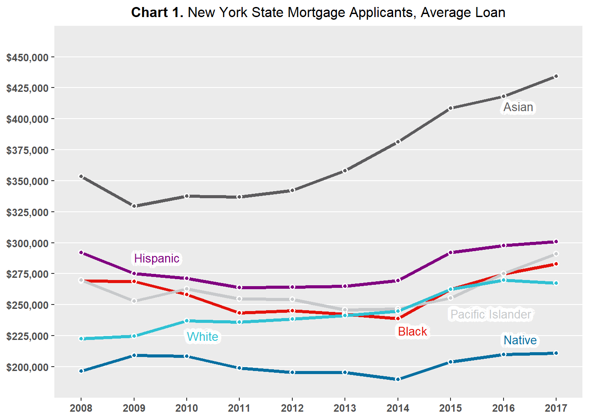
# **Chart 2.** New York State Mortgage Applicants, Average Income
# Plot labels and label positions for Chart 2
line_labels<- data.frame(
labels = c("Native", "Asian", "Black", "Hispanic", "Pacific Islander", "White"),
x = c(ymd(20150701), ymd(20150701), ymd(20150701), ymd(20150701), ymd(20150701), ymd(20150701)),
y = c(105000, 152000, 95000, 111000, 119000, 137000),
color = c(BLUE, DARK_GREY, RED, PURPLE, GREY, GREEN))
loans2 %>%
group_by(hh_race, year) %>%
filter(!is.na(income), hh_race %in% c("white", "black", "hispanic", "asian", "pacific islander", "american indian or alaska native")) %>%
summarise(mean_income = mean(income)) %>%
mutate(date = ymd(paste0(year, "0101"))) %>%
ggplot(aes(date, mean_income)) +
geom_line(aes(color = hh_race), size = 1.4) +
geom_point(
aes(fill = hh_race),
size = 1.5,
pch = 21,
color = "white",
stroke = 1
) +
scale_color_manual(values = c(BLUE, DARK_GREY, RED, PURPLE, GREY, GREEN)) +
scale_fill_manual(values = c(BLUE, DARK_GREY, RED, PURPLE, GREY, GREEN)) +
scale_x_continuous(
limits = c(ymd(20070701), ymd(20170701)),
expand = c(0, 0),
breaks = c(ymd(20080101), ymd(20090101), ymd(20100101), ymd(20110101), ymd(20120101), ymd(20130101), ymd(20140101), ymd(20150101), ymd(20160101), ymd(20170101)),
labels = c("2008", "2009", "2010", "2011", "2012", "2013", "2014", "2015", "2016", "2017")) +
scale_y_continuous(
limits = c(85000, 165000),
expand = c(0, 0),
breaks = c(90000, 100000, 110000, 120000, 130000, 140000, 150000, 160000),
labels=scales::dollar_format()) +
labs(title = "**Chart 2.** New York State Mortgage Loan Applicants, Average Income") +
theme(
legend.position = "none",
panel.grid.minor.y = element_blank(),
panel.grid.major.x = element_blank(),
panel.grid.minor.x = element_blank(),
axis.title = element_blank(),
plot.title = element_markdown(
family = "Econ Sans Cnd",
size = 12,
hjust = 0.5),
axis.text.y = element_text(face = "bold"),
axis.text.x = element_text(face = "bold")) +
new_scale_color() +
geom_shadowtext(
aes(x, y, label = labels, color = color),
data = line_labels,
hjust = 0,
bg.colour = "white",
bg.r = 0.4,
family = "Econ Sans Cnd",
size = 3.5) +
scale_color_identity()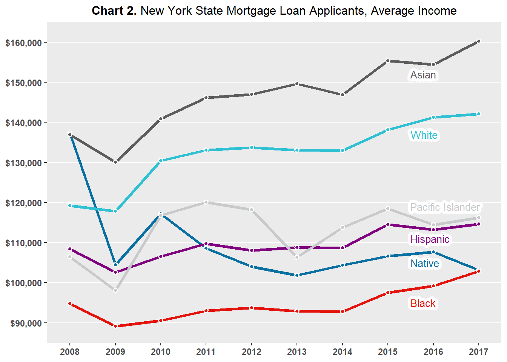
Method of Analysis
To analyze whether race affects mortgage approvals, the approval and denial rates of mortgage applications by race of applicant will be compared. The approval and denial rates of mortgage applicants, segmented by race, will be plotted over time. If there is a fairly large and consistent gap between in approval or denial rates between races across time , then there may exist a systematic race-based effect on mortgage outcomes.
To ensure the robustness of initial analyses, geographic or spatial variation in mortgage approvals between counties will be analyzed. Mortgage approval rates by race and county will be represented on county-level maps of New York State. These maps are “geographic heat maps,” which represent the level of approval rates in a county by the shade of a color - the deeper the color, the higher the approval rate. If a race effect on mortgage lending is implied at the statewide level and a specific race of applicant consistently has lower (or higher) approval rates across counties, then the race-based effect is not confined to a single region but is in fact prevalent across the state.
Lastly, the demographic variation in each county will be considered. The HMDA data does not provide a racial breakdown of counties by race, but the percent of applicants by race can be used to represent county demographics. It may be the case that a county with a greater (smaller) number of applicants of a specific race will have higher (lower) mortgage approval rates for said race. The county percentage of applicants of a specific race will be compared against the county mortgage approval rates of said race to analyze such a possibility.
Visual Analysis
Mortgage Applications by Race
Chart 3 plots the percentage of mortgage applications denied by applicant race, and Chart 4 plots the percentage of mortgage applications approved by applicant race.
The percentage of mortgage applications denied by applicant race is calculated by comparing the number of mortgage denials for applicants of a specific race against the total number of mortgage denials submitted by applicants of said race. Similarly, the percentage of mortgage applications approved by applicant race is calculated by comparing the number of mortgage approvals for applicants of a specific race against the total number of mortgage approvals submitted by applicants of said race.
Chart 3 shows that Native American/Alaskan Native applicants are denied at higher rates than applicants of other races, with denial rates consistently over 30 percent. Non-Hispanic White and Asian applicants have the lowest denial rates, with rates consistently under 25 percent.
Chart 4 shows a similar ranking, as Native American/Alaskan Native applicants are approved at the lowest or second lowest rates and non-Hispanic and Asian applicants having the highest approval rates. Black applicants were approved at the lowest rates in 2008-2009 and in 2011-2013, but since then have been approved at the second lowest rates.
Both Chart 3 and Chart 4 display similar trends between the approval and denial rates of the different races of applicants - the gaps between the races remain largely the same over time.
For example, the denial rate for Native American/Alaskan Native applicants was around 43 percent in 2008 while the denial rate for Asian applicants was around 25 percent in 2008 - a difference of 18 percent; the denial rate for Native American/Alaskan Native applicants was 30 percent and 15 percent for Asian applicants in 2017 - a difference of 15 percent.
Similarly, the approval rate for non-Hispanic white applicants was around 46 percent in 2008 while the approval rate for Black applicants was around 27 percent in 2008 - a difference of 19 percent; the approval rate for non-Hispanic white applicants was 62 percent and 45 percent for Black applicants in 2017 - a difference of 17 percent.
The stable and fairly large differences between applicants by race across time imply that a systematic race effect may be present when it comes to decisions made by mortgage lenders. The presence of a systematic race effect on mortgage lending in New York State is supported by the observation that two specific races of applicants are consistently at the top of mortgage approvals and at the bottom of mortgage denials while one specific race of applicant is consistently at the bottom of mortgage approvals and at the top of mortgage approvals.
# **Chart 3.** New York State Mortgage Applications, % Denied
# Plot labels and label positions for Chart 3
line_labels<- data.frame(
labels = c("Native", "Asian", "Black", "Hispanic", "Pacific Islander", "White"),
x = c(ymd(20150101), ymd(20140101), ymd(20150101), ymd(20140101), ymd(20140101), ymd(20150101)),
y = c(0.39, 0.215, 0.31, 0.265, 0.345, 0.16),
color = c(BLUE, DARK_GREY, RED, PURPLE, GREY, GREEN))
loans3 <- loans2 %>%
group_by(hh_race, year) %>%
mutate(count_yr_race = n(),
denial_yr_race = sum(action == "application denied by financial institution"),
percent_denial_yr_race = round(denial_yr_race / count_yr_race, 3),
approval_yr_race = sum(action == "loan originated" | action == "application
approved but not accepted"),
percent_approval_yr_race = round(approval_yr_race / count_yr_race, 3))
loans3 %>%
group_by(hh_race, year) %>%
filter(hh_race %in% c("white", "black", "hispanic", "asian", "pacific islander", "american indian or alaska native")) %>%
mutate(date = ymd(paste0(year, "0101"))) %>%
distinct(hh_race, date, percent_denial_yr_race) %>%
ggplot(aes(date, percent_denial_yr_race)) +
geom_line(aes(color = hh_race), size = 1.4) +
geom_point(
aes(fill = hh_race),
size = 1.5,
pch = 21,
color = "white",
stroke = 1
) +
scale_color_manual(values = c(BLUE, DARK_GREY, RED, PURPLE, GREY, GREEN)) +
scale_fill_manual(values = c(BLUE, DARK_GREY, RED, PURPLE, GREY, GREEN)) +
scale_x_continuous(
limits = c(ymd(20070701), ymd(20170701)),
expand = c(0, 0),
breaks = c(ymd(20080101), ymd(20090101), ymd(20100101), ymd(20110101), ymd(20120101), ymd(20130101), ymd(20140101), ymd(20150101), ymd(20160101), ymd(20170101)),
labels = c("2008", "2009", "2010", "2011", "2012", "2013", "2014", "2015", "2016", "2017")) +
scale_y_continuous(
limits = c(0.07, 0.47),
expand = c(0, 0),
breaks = c(0.1, 0.15, 0.2, 0.25, 0.3, 0.35, 0.4, 0.45),
labels=scales::percent_format()) +
labs(title = "**Chart 3.** New York State Mortgage Applications, % Denied") +
theme(
legend.position = "none",
panel.grid.minor.y = element_blank(),
panel.grid.major.x = element_blank(),
panel.grid.minor.x = element_blank(),
axis.title = element_blank(),
plot.title = element_markdown(
family = "Econ Sans Cnd",
size = 12,
hjust = 0.5),
axis.text.y = element_text(face = "bold"),
axis.text.x = element_text(face = "bold")) +
new_scale_color() +
geom_shadowtext(
aes(x, y, label = labels, color = color),
data = line_labels,
hjust = 0,
bg.colour = "white",
bg.r = 0.4,
family = "Econ Sans Cnd",
size = 3.5) +
scale_color_identity()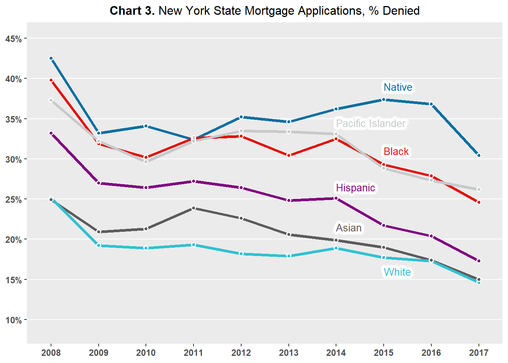
# **Chart 4.** New York State Mortgage Applications, % Approved
# Plot labels and label positions for Chart 4
line_labels<- data.frame(
labels = c("Native", "Asian", "Black", "Hispanic", "Pacific Islander", "White"),
x = c(ymd(20160101), ymd(20160101), ymd(20120101), ymd(20150101), ymd(20150101), ymd(20150101)),
y = c(0.36, 0.564, 0.365, 0.54, 0.498, 0.628),
color = c(BLUE, DARK_GREY, RED, PURPLE, GREY, GREEN))
loans3 %>%
group_by(hh_race, year) %>%
filter(hh_race %in% c("white", "black", "hispanic", "asian", "pacific islander", "american indian or alaska native")) %>%
mutate(date = ymd(paste0(year, "0101"))) %>%
distinct(hh_race, date, percent_approval_yr_race) %>%
ggplot(aes(date, percent_approval_yr_race)) +
geom_line(aes(color = hh_race), size = 1.4) +
geom_point(
aes(fill = hh_race),
size = 1.5,
pch = 21,
color = "white",
stroke = 1
) +
scale_color_manual(values = c(BLUE, DARK_GREY, RED, PURPLE, GREY, GREEN)) +
scale_fill_manual(values = c(BLUE, DARK_GREY, RED, PURPLE, GREY, GREEN)) +
scale_x_continuous(
limits = c(ymd(20070701), ymd(20170701)),
expand = c(0, 0),
breaks = c(ymd(20080101), ymd(20090101), ymd(20100101), ymd(20110101), ymd(20120101), ymd(20130101), ymd(20140101), ymd(20150101), ymd(20160101), ymd(20170101)),
labels = c("2008", "2009", "2010", "2011", "2012", "2013", "2014", "2015", "2016", "2017")) +
scale_y_continuous(
limits = c(0.23, 0.67),
expand = c(0, 0),
breaks = c(0.25, 0.3, 0.35, 0.4, 0.45, 0.5, 0.55, 0.6, 0.65),
labels=scales::percent_format()) +
labs(title = "**Chart 4.** New York State Mortgage Applications, % Approved") +
theme(
legend.position = "none",
panel.grid.minor.y = element_blank(),
panel.grid.major.x = element_blank(),
panel.grid.minor.x = element_blank(),
axis.title = element_blank(),
plot.title = element_markdown(
family = "Econ Sans Cnd",
size = 12,
hjust = 0.5),
axis.text.y = element_text(face = "bold"),
axis.text.x = element_text(face = "bold")) +
new_scale_color() +
geom_shadowtext(
aes(x, y, label = labels, color = color),
data = line_labels,
hjust = 0,
bg.colour = "white",
bg.r = 0.4,
family = "Econ Sans Cnd",
size = 3.5) +
scale_color_identity()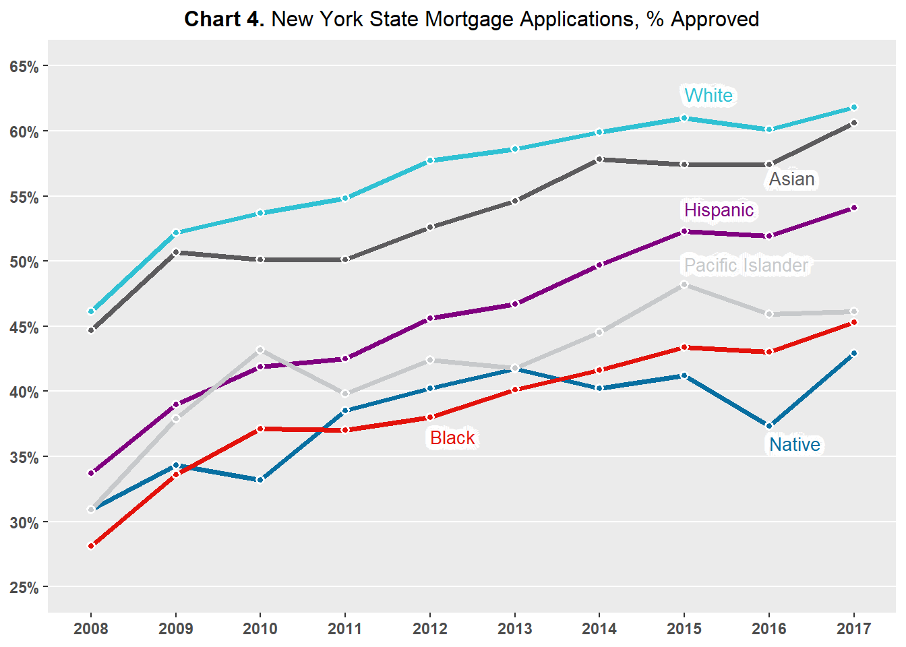
Mortgage Applications by Race and County
Next, the geographic influence on the relationship between race and mortgage application outcomes is analyzed. Analysis has been streamlined to focus on four groups: non-White Hispanics, Asians, Blacks, and Native Americans/Alaska Natives. These were the four groups consistently at the top or bottom of mortgage approval rates as shown in the earlier analysis.
Recall in the introductory analysis that there were applications with counties missing. To conduct the ensuing analysis, these counties must be removed. The HMDA data contains the metropolitan statistical area and census tract for each county, but these geographical designations span multiple counties. It would be an exhaustive exercise to impute a county; in addition, if the imputation is very inaccurate, it would heavily influence the ensuing analysis.
Maps 1, 2, 3, 4 display mortgage approval rates at the county-level in New York State by applicant race.
Map 1 shows that non-Hispanic white applicants across the state have approval rates higher than 40 percent. There are a myriad of counties, concentrated in the middle of the state, where non-Hispanic white applicants have approval ratings of higher than 60 percent.
Maps 2, 3, 4 shows that spatial variation exists when it comes to approval rates for non-White applicants. Asian, Black, and Native American/Alaskan applicants noticeably have counties which are either white or very light in color, indicating low approval rates, and counties which are in darker shades of blue, indicating high approval rates. These spatial differences imply that the experiences of non-White applicants in New York State differ based on location. In some counties, a non-White applicant may have greater chances of approval than in other counties.
Table 4A and 4B identify the three top counties and three bottom counties in terms of mortgage approval rates by applicant race. The lowest county approval rates for Native American/Alaskan Native are around 24 percent and the highest county approval rate for Native American/Alaskan Native is 72 percent. The lowest county approval rates for non-Hispanic White are around 45 percent, while the highest county rate is 73 percent. The range for the Native American/Alaskan Native and other non-White county approval rates are fairly larger than the range for the non-Hispanic White county approval rates - meaning that the variation amongst counties for non-White applicants is greater than the variation amongst counties for non-Hispanic White applicants. To drive home the point, Black applicants in Franklin County have 23 percent approval rates while Black applicants in Hamilton County have 71 percent approval rates - a whopping difference of 48 percent.
Tables 4A and 4B back up the relative lack of spatial variation in approval rates amongst non-Hispanic White applicants and the presence of spatial variation in approval rates amongst non-White applicants observed in the maps.
In conclusion, geographic variation in mortgage approval rates appear to be largely absent for non-Hispanic White applicants. Non-Hispanic White applicants experience relatively high mortgage approval rates across New York State, while non-White applicants experience high or low approval rates depending on the county. These results suggest that the implied race effect on mortgage application outcomes at the state level may be concentrated in a few select counties rather than hold true across the entirely of the state.
# Merge fips data with main dataset
counties <- county.fips %>%
as.data.frame() %>%
mutate(state = sub(",.*", "", polyname),
county_name = sub(".*,", "", polyname),
county = fips) %>%
select(county, state, county_name) %>%
filter(state == "new york")
loans4 <- left_join(loans3, counties, by = "county")
# Map approval % for white applicants, all years, by New York county
loans_white <- loans4 %>%
group_by(hh_race, county) %>%
mutate(count_race = n(),
fips = county,
denial_race = sum(action == "application denied by financial institution"),
percent_denial_race = round(denial_race / count_race, 3),
approval_race = sum(action == "loan originated" | action == "application
approved but not accepted"),
percent_approval_race = round(approval_race / count_race, 3)*100) %>%
distinct(hh_race, county, fips, percent_denial_race, percent_approval_race) %>%
filter(hh_race == "white", !is.na(fips))
plot_usmap(regions = "counties", include = c("NY"), data = loans_white, values = "percent_approval_race") +
labs(title = "Map 1. New York State White Mortgage Applicants, % Approval", subtitle = "") +
scale_fill_binned(low = "white", high = "blue", na.value="light grey", name = "Approval", guide = guide_bins(axis = FALSE, show.limits = TRUE)) +
theme(legend.position = "right")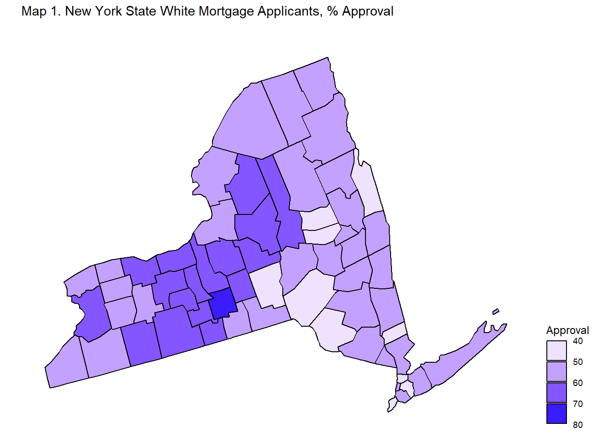
# Map approval % for Asian applicants, all years, by New York county
loans_asian <- loans4 %>%
group_by(hh_race, county) %>%
mutate(count_race = n(),
fips = county,
denial_race = sum(action == "application denied by financial institution"),
percent_denial_race = round(denial_race / count_race, 3),
approval_race = sum(action == "loan originated" | action == "application
approved but not accepted"),
percent_approval_race = round(approval_race / count_race, 3)*100) %>%
distinct(hh_race, county, fips, percent_denial_race, percent_approval_race) %>%
filter(hh_race == "asian", !is.na(fips))
plot_usmap(regions = "counties", include = c("NY"), data = loans_asian, values = "percent_approval_race") +
labs(title = "Map 1. New York State Asian Mortgage Applicants, % Approval", subtitle = "") +
scale_fill_binned(low = "white", high = "blue", na.value="light grey", name = "Approval", guide = guide_bins(axis = FALSE, show.limits = TRUE)) +
theme(legend.position = "right")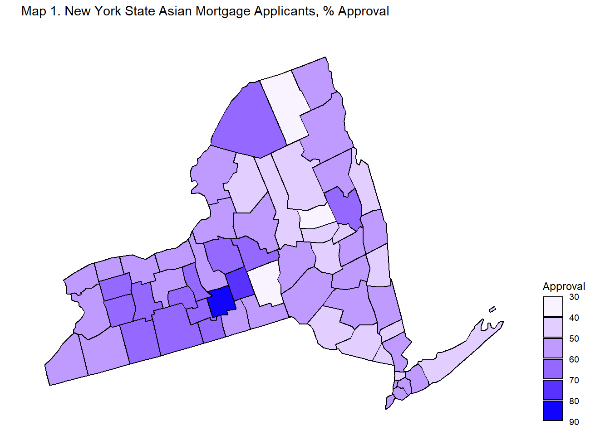
# Map approval % for Black applicants, all years, by New York county
loans_black <- loans4 %>%
group_by(hh_race, county) %>%
mutate(count_race = n(),
fips = county,
denial_race = sum(action == "application denied by financial institution"),
percent_denial_race = round(denial_race / count_race, 3),
approval_race = sum(action == "loan originated" | action == "application
approved but not accepted"),
percent_approval_race = round(approval_race / count_race, 3)*100) %>%
distinct(hh_race, county, fips, percent_denial_race, percent_approval_race) %>%
filter(hh_race == "black", !is.na(fips))
plot_usmap(regions = "counties", include = c("NY"), data = loans_black, values = "percent_approval_race") +
labs(title = "Map 1. New York State Black Mortgage Applicants, % Approval", subtitle = "") +
scale_fill_binned(low = "white", high = "blue", na.value="light grey", name = "Approval", guide = guide_bins(axis = FALSE, show.limits = TRUE)) +
theme(legend.position = "right")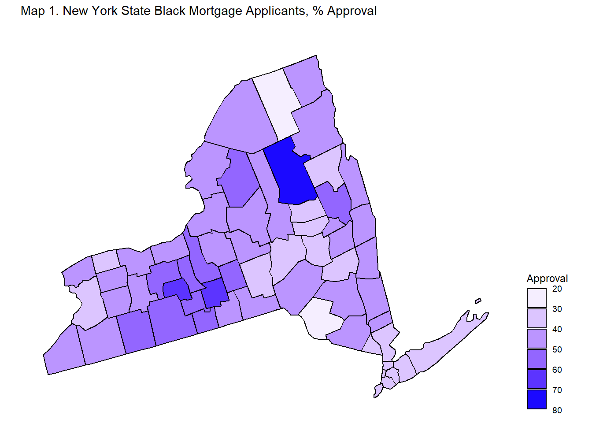
# Map approval % for Native applicants, all years, by New York county
loans_native <- loans4 %>%
group_by(hh_race, county) %>%
mutate(count_race = n(),
fips = county,
denial_race = sum(action == "application denied by financial institution"),
percent_denial_race = round(denial_race / count_race, 3),
approval_race = sum(action == "loan originated" | action == "application
approved but not accepted"),
percent_approval_race = round(approval_race / count_race, 3)*100) %>%
distinct(hh_race, county, fips, percent_denial_race, percent_approval_race) %>%
filter(hh_race == "american indian or alaska native", !is.na(fips))
plot_usmap(regions = "counties", include = c("NY"), data = loans_native, values = "percent_approval_race") +
labs(title = "Map 1. New York State Native Mortgage Applicants, % Approval", subtitle = "") +
scale_fill_binned(low = "white", high = "blue", na.value="light grey", name = "Approval", guide = guide_bins(axis = FALSE, show.limits = TRUE)) +
theme(legend.position = "right")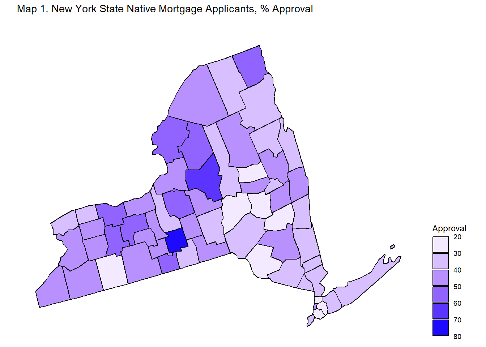
#Table version of highest approval ratings by county of race with population (top 3)
loans5 <- loans4 %>%
filter(!is.na(county)) %>%
group_by(county) %>%
mutate(total_cty = n(),
white_perc = round(sum(hh_race == "white") / total_cty, 3),
asian_perc = round(sum(hh_race == "asian") / total_cty, 3),
black_perc = round(sum(hh_race == "black") / total_cty, 3),
native_perc = round(sum(hh_race == "american indian or alaska native") / total_cty, 3)) %>%
ungroup() %>%
group_by(county, hh_race) %>%
mutate(
count_race = n(),
approval_race = sum(action == "loan originated" | action == "application
approved but not accepted"),
percent_approval_race = round(approval_race / count_race, 3)) %>%
distinct(hh_race, county, county_name, percent_approval_race, white_perc, asian_perc, black_perc, native_perc)
loans5 %>%
mutate(race = hh_race,
county = toupper(county_name),
percent_approval = percent_approval_race*100) %>%
filter(hh_race %in% c("american indian or alaska native", "asian", "black", "white")) %>%
group_by(race) %>%
select(race, county, percent_approval) %>%
arrange(desc(percent_approval), .by_group = TRUE) %>%
slice(1:3) %>%
kbl(caption = "Table 4A. Top 3 Loan Approval %, by Race and N.Y. County") %>%
kable_classic(html_font = "Times New Roman", font_size=16) %>%
row_spec(1:12, extra_css = "border-bottom: 0.5px dashed;")| race | county | percent_approval |
|---|---|---|
| american indian or alaska native | TOMPKINS | 71.6 |
| american indian or alaska native | ONEIDA | 62.5 |
| american indian or alaska native | ONTARIO | 57.0 |
| asian | TOMPKINS | 80.6 |
| asian | CORTLAND | 70.2 |
| asian | CHEMUNG | 69.3 |
| black | HAMILTON | 71.4 |
| black | YATES | 66.7 |
| black | TOMPKINS | 60.9 |
| white | TOMPKINS | 73.4 |
| white | CHEMUNG | 67.2 |
| white | LEWIS | 66.2 |
#Table version of lowest approval ratings by county of race with population (bottom 3)
loans5 %>%
mutate(race = hh_race,
county = toupper(county_name),
percent_approval = percent_approval_race*100) %>%
filter(hh_race %in% c("american indian or alaska native", "asian", "black", "white")) %>%
group_by(race) %>%
select(race, county, percent_approval) %>%
arrange(percent_approval, .by_group = TRUE) %>%
slice(1:3) %>%
kbl(caption = "Table 4B. Bottom 3 Loan Approval %, by Race and N.Y. County") %>%
kable_classic(html_font = "Times New Roman", font_size=16) %>%
row_spec(1:12, extra_css = "border-bottom: 0.5px dashed;")| race | county | percent_approval |
|---|---|---|
| american indian or alaska native | BRONX | 21.1 |
| american indian or alaska native | OTSEGO | 24.2 |
| american indian or alaska native | SCHOHARIE | 26.0 |
| asian | FULTON | 35.6 |
| asian | CHENANGO | 36.6 |
| asian | FRANKLIN | 40.0 |
| black | FRANKLIN | 22.9 |
| black | SULLIVAN | 28.2 |
| black | CHENANGO | 31.4 |
| white | SULLIVAN | 42.4 |
| white | DELAWARE | 45.8 |
| white | BRONX | 45.8 |
County Applicant Race and County Approval Rates
The previous analysis of variation in mortgage approval rates across counties leads to the following question: do county mortgage approval rates of a specific race of applicant vary based on the percent of county applicants of said race? In other words, is the county variation in approval rates observed from the maps driven by demographics? Are the counties with higher approval rates for applicants of a certain race also the same counties with higher percent of applicants of said race?
Charts 5, 6, 7, 8 plot county percent of applicant race against county percent of approvals of said race.
Chart 5 compares the county percent of non-Hispanic White applicants against the county percent of non-Hispanic White approvals. The chart shows a slight positive association between county percent of non-Hispanic White applicants against the county percent of non-Hispanic White approvals. In other words, the more non-Hispanic White applicants there are in a county, the greater the probability of non-Hispanic White applications being approved. One caveat is that the majority of the points in the plot lay in the 60 to 80 percent range for percent of non-Hispanic White applicants. There are only a few points below this range, which may be driving the pulling the association in the positive direction.
Chart 6 compares the county percent of Asian applicants against the county percent of Asian approvals. The chart shows a slight negative association between county percent of Asian applicants against the county percent of Asian approvals. The slope of the association, or red line on the chart, is less steep than the line in Chart 5 - implying a very weak association if any between county percent of Asian applicants and county percent of Asian approvals.
Chart 7 compares the county percent of Black applicants against the county percent of Black approvals. The chart shows a slight negative association between county percent of Black applicants against the county percent of Black approvals. The slope of the association, or red line on the chart, is steeper than the line in Chart 6 - implying a stronger negative relationship than the one observed with Asian applicants. This negative relationship, however, sounds counterintuitive: the greater the number of Black applicants, the lower the Black approval rate. This would imply that greater diversity leads to lower approval rates. One big caveat is that there are only three counties with percent of Black applicants greater than 10 percent, the rest of the counties have percent of Black applicants lower than that; these same three counties appear to have lower approval rates than most other counties. It is likely that these three counties are pulling the relationship between county percent of Black applicants and county percent of Black approvals in the negative direction.
Chart 8 compares the county percent of Native American/Alaskan Native applicants against the county percent of Native American/Alaskan Native approvals. The chart shows minor to zero association between county percent of Native American/Alaskan Native applicants and county percent of Native American/Alaskan Native approvals. The slope of the association, or red line on the chart, is almost perfectly flat - implying a lack of relationship between county percent of Native American/Alaskan Native applicants and county percent of Native American/Alaskan Native approvals.
All in all, Charts 6, 7, 8 fail to provide sufficient or strong enough evidence to suggest that the county variation in approval rates amongst non-White applicants is due to the demographic composition of the county. It does not appear to be the case that strength in numbers leads to a higher rates of mortgage approvals at the county-level in. In fact, Charts 6 and 7 may suggest the opposite: that greater diversity may lead to lower rates of mortgage approvals. Therefore, the county variation in approval rates amongst non-White applicants observed in Maps 2, 3, 4 is likely due to another factor.
# Scatterplot county percent_approval_race - race %
loans5 %>%
filter(hh_race == "white") %>%
ggplot(aes(x=white_perc, y=percent_approval_race)) +
geom_point() +
theme(
panel.grid.minor.y = element_blank(),
panel.grid.major.x = element_blank(),
panel.grid.minor.x = element_blank(),
plot.title = element_markdown(
family = "Econ Sans Cnd",
size = 10,
hjust = 0.5),
axis.text.y = element_text(face = "bold"),
axis.text.x = element_text(face = "bold", size=7)) +
labs(title = "**Chart 5.** N.Y. Counties, % White Applied vs. % White Approved, 2008-2017") +
ylab("% of White Applicants Approved in County") +
xlab("% of White Applicants in County") +
geom_smooth(method=lm , color="red", fill="#69b3a2", se=TRUE) +
scale_x_continuous(labels=scales::percent_format()) +
scale_y_continuous(labels=scales::percent_format())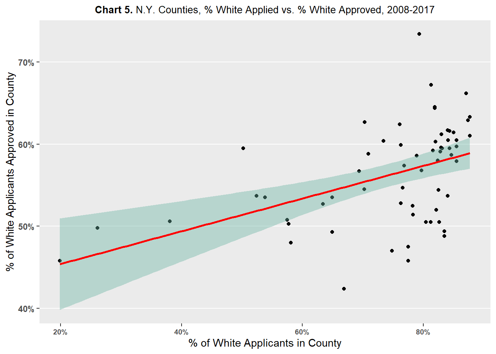
loans5 %>%
filter(hh_race == "asian") %>%
ggplot(aes(x=asian_perc, y=percent_approval_race)) +
geom_point() +
theme(
panel.grid.minor.y = element_blank(),
panel.grid.major.x = element_blank(),
panel.grid.minor.x = element_blank(),
plot.title = element_markdown(
family = "Econ Sans Cnd",
size = 10,
hjust = 0.5),
axis.text.y = element_text(face = "bold"),
axis.text.x = element_text(face = "bold", size=7)) +
labs(title = "**Chart 6.** N.Y. Counties, % Asian Applied vs. % Asian Approved, 2008-2017") +
ylab("% of Asian Applicants Approved in County") +
xlab("% of Asian Applicants in County") +
geom_smooth(method=lm , color="red", fill="#69b3a2", se=TRUE) +
scale_x_continuous(labels=scales::percent_format()) +
scale_y_continuous(labels=scales::percent_format())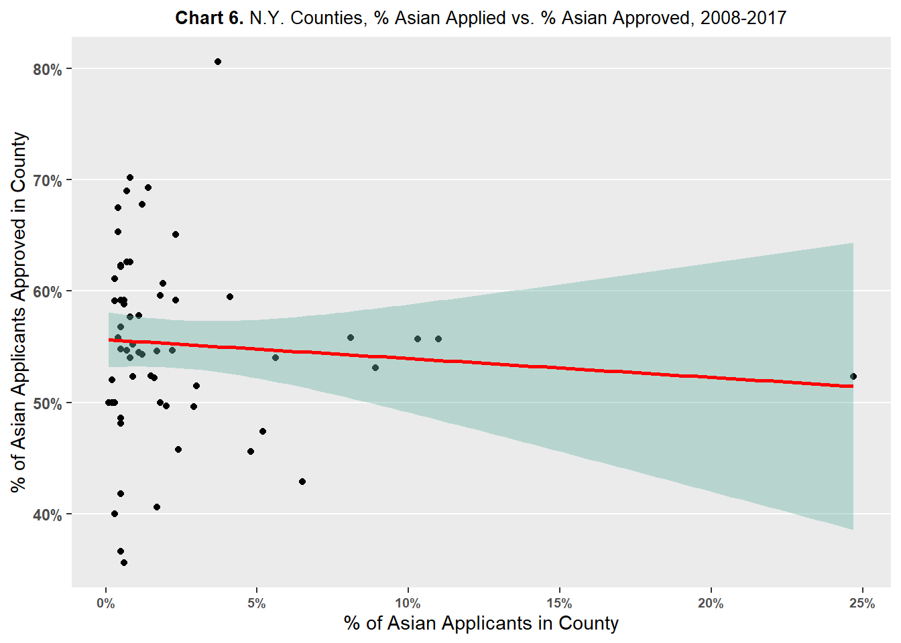
loans5 %>%
filter(hh_race == "black") %>%
ggplot(aes(x=black_perc, y=percent_approval_race)) +
geom_point() +
theme(
panel.grid.minor.y = element_blank(),
panel.grid.major.x = element_blank(),
panel.grid.minor.x = element_blank(),
plot.title = element_markdown(
family = "Econ Sans Cnd",
size = 10,
hjust = 0.5),
axis.text.y = element_text(face = "bold"),
axis.text.x = element_text(face = "bold", size=7)) +
labs(title = "**Chart 7.** N.Y. Counties, % Black Applied vs. % Black Approved, 2008-2017") +
ylab("% of Black Applicants Approved in County") +
xlab("% of Black Applicants in County") +
geom_smooth(method=lm , color="red", fill="#69b3a2", se=TRUE) +
scale_x_continuous(labels=scales::percent_format()) +
scale_y_continuous(labels=scales::percent_format())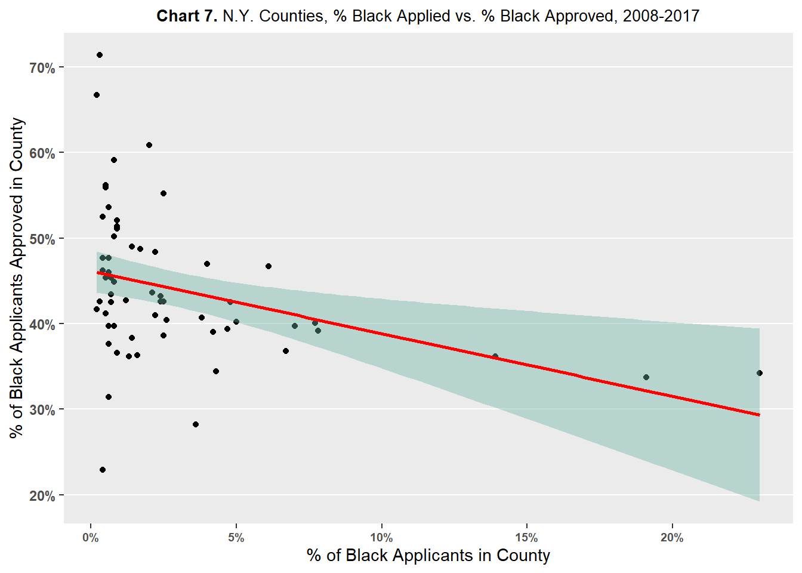
loans5 %>%
filter(hh_race == "american indian or alaska native") %>%
ggplot(aes(x=native_perc, y=percent_approval_race)) +
geom_point() +
theme(
panel.grid.minor.y = element_blank(),
panel.grid.major.x = element_blank(),
panel.grid.minor.x = element_blank(),
plot.title = element_markdown(
family = "Econ Sans Cnd",
size = 10,
hjust = 0.5),
axis.text.y = element_text(face = "bold"),
axis.text.x = element_text(face = "bold", size=7)) +
labs(title = "**Chart 8.** N.Y. Counties, % Native Applied vs. % Native Approved, 2008-2017") +
ylab("% of Native Applicants Approved in County") +
xlab("% of Native Applicants in County") +
geom_smooth(method=lm , color="red", fill="#69b3a2", se=TRUE) +
scale_x_continuous(labels=scales::percent_format()) +
scale_y_continuous(labels=scales::percent_format())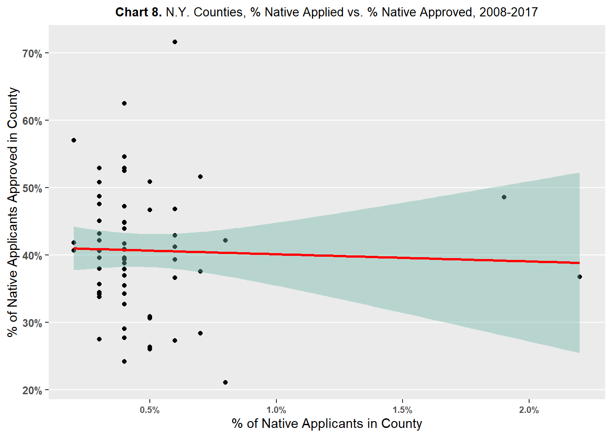
Conclusion
Analyzing HMDA mortgage application data provided by the Consumer Financial Protection Bureau for New York State from 2008-2017, large and consistent differences were found for mortgage approval and denial rates between applicants of different races at the statewide level. Non-Hispanic White and Asian applicants in New York State experience the lowest rates of denials and the highest rates of approvals. Native American/Alaskan Native applicants in New York State experience the highest rates of denials and the lowest rates of approvals. Black applicants in New York State fluctuate in the middle-of-the-pack in terms of denial rates, but they have been the lowest or second lowest in terms of approval rates.
Analysis at the county-level uncovered that there was a fair amount of county variation amongst non-White applicants when it came to mortgage approval rates. Non-Hispanic White applicants had relatively less county variation in approval rates than non-White applicants. County-level analysis suggests that differences between mortgage application outcomes at the state-level between races may only be concentrated in a few select counties or regions rather than a statewide phenomenon.
Further analysis at the county-level failed to find evidence that the percent of a certain race of applicant had a positive effect on the the approval rate of applicant of said race. In other words, there was no evidence found to suggest that greater numbers of an applicant of a specific race in a county led to higher approval rates for said race. Then, the county-level variation in mortgage approval rates observed amongst non-White applicants is still unexplained and a topic for future research.
In addition, the effect of income on the relationship between race and mortgage lending should also be considered in future research. Typically, higher incomes are positively associated with higher credit scores. Thus, it may be the case that higher incomes influence mortgage application outcomes more than race. At the county level, average income of an applicant of a specific race will be compared against the mortgage approval rates of said race. If across races, there is a strong relationship between average income and mortgage approval, then any race effect on mortgage approval observed earlier may be confounded with the effect of income.
Bibliography
Cherian, Madhavi. “Race in the Mortgage Market: An Empirical Investigation Using HMDA Data.” Race, Gender & Class 21, no. 1/2 (2014): 48–63. http://www.jstor.org/stable/43496959.
Consumer Financial Protection Bureau. Home Mortgage Disclosure Act Modified Loan/Application Register. 2017. Distributed by Consumer Financial Protection Bureau. https://www.consumerfinance.gov/data-research/hmda/historic-data/.
Consumer Financial Protection Bureau. “Mortgage Data (HMDA).” Consumer Financial Protection Bureau. Consumer Financial Protection Bureau. 2023. https://www.consumerfinance.gov/data-research/hmda/
Munnell, Alicia H., Geoffrey M. B. Tootell, Lynn E. Browne, and James McEneaney. “Mortgage Lending in Boston: Interpreting HMDA Data.” The American Economic Review 86, no. 1 (1996): 25–53. http://www.jstor.org/stable/2118254.
R Core Team (2022). R: A language and environment for statistical computing. R Foundation for Statistical Computing, Vienna, Austria. URL https://www.R-project.org/.